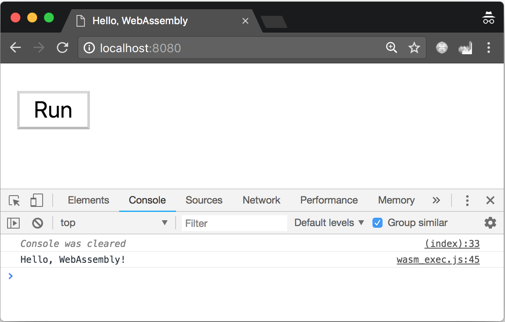
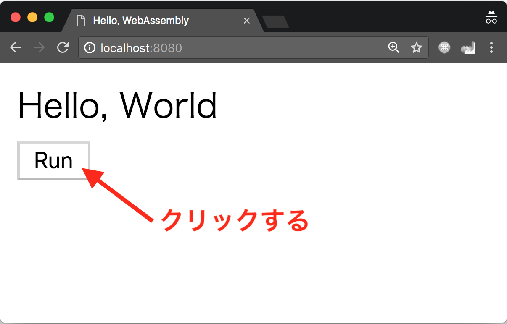
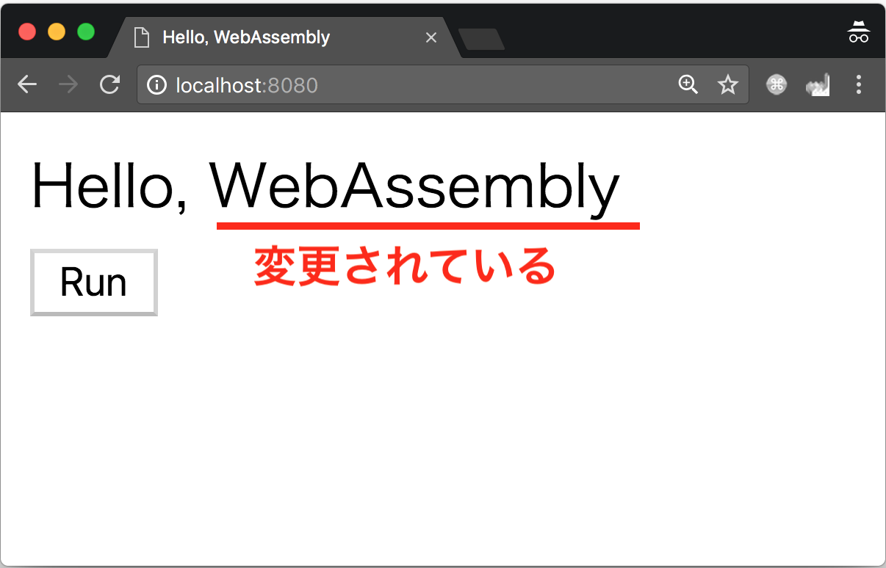
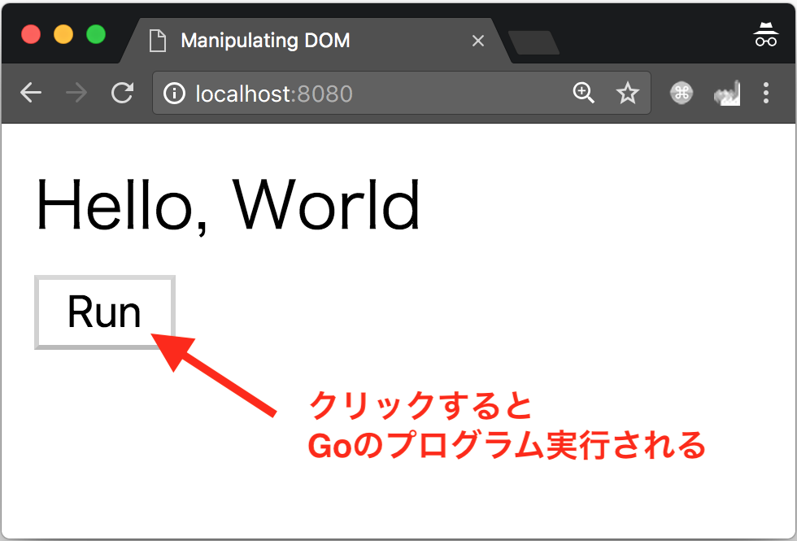
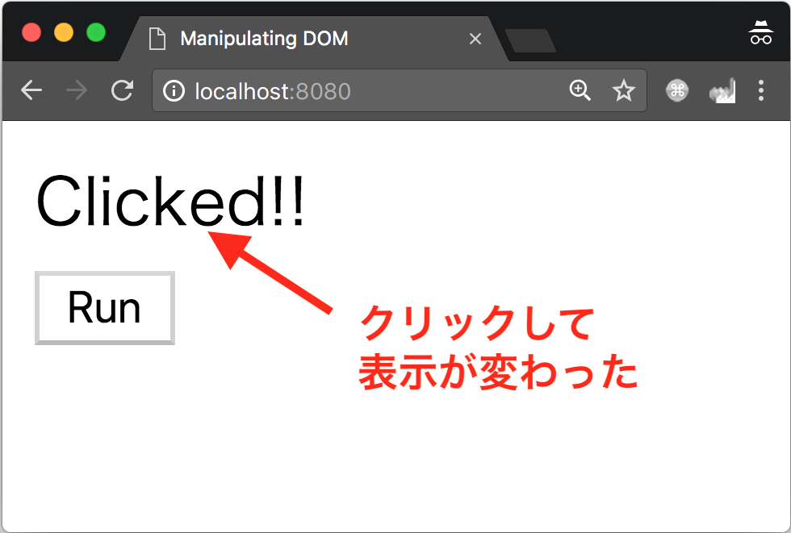

ここではGoでWebAssemblyを扱う方法について解説します。このコードラボを通してGoのコードからWebAssemblyへのビルドの仕方、GoからJavaScriptのAPIを扱う方法などについて知ることができます。このコードラボが終わる頃には、Goで書いたプログラムがWebブラウザ上で動かせるようになります。
なお、このコードラボでは、Go1.11以上のGoの開発環境を必要とします。コマンド等はmacOSのコマンドを元に表記してあるため、他のOSの場合には適宜読み替えてください。
まずはGitHubからこのコードラボで使うサンプルコードをダウンロードしましょう。git cloneするか、ZIPでダウンロードして解凍しましょう。
$ git clone https://github.com/golangtokyo/codelab.git
なお、このコードラボのサンプルコードはgo-webassembly以下に入っています。
$ cd codelab/go-webassembly $ ls 1_hellowasm 2_dom 3_clickevent README.md server.go
WebAssembly（wasm）とは、ブラウザで動くかすことのできるプログラミング言語とその周辺の技術やツールを指します。バイナリ形式で表され、スタックマシンの処理系で処理されます。JavaScriptのようにブラウザに直接解釈されますが、JavaScriptより速度面で上回ることを目標に開発・仕様の策定が進んでいます。
WebAssemblyはプログラマが直接バイナリ形式のコードを書くわけではなく、CやC++、Rustのような、さまざまな高級言語からコンパイルされることがほとんどです。Goにおいても、Go1.11から正式にGoの標準の機能として、GoのコードをWebAssemblyにコンパイルする機能が追加されました。
それではさっそく、GoのコードからWebAsemmblyにビルドしてみましょう。
Goには、クロスコンパイルという機能があります。コンパイルを行うマシンのアーキテクチャやOS用のバイナリをビルドするだけではなく、別のアーキテクチャやOS向けのバイナリをビルドすることができます。
例えば、macOSでWindowsやLinux向けのバイナリをクロスコンパイルすることが非常に簡単です。次のように、GOOSとGOARCHという環境変数を指定して、いつものようにgo bulidすることでクロスコンパイルすることができます。
# Windows(32ビット)向けにコンパイル $ GOOS=windows GOARCH=386 go build # Linux(64ビット)向けにコンパイル $ GOOS=linux GOARCH=amd64 go build
さて、同じようにWebAssemblyをクロスコンパイルしてみましょう。コンパイルするファイルは、1_hellowasmディレクトリに入っているmain.goです。1_hellowasm/main.goは次のように定義されています。
package main
func main() {
println("Hello, WebAssembly!")
}println関数でHello, WebAssemblyと表示する簡単なプログラムです。
それでは、1_hellowasmディレクトリ以下に行き、次のようにGOOSをjs、GOARCHをwasmにしてgo buildを実行してみましょう。なお、ここでは-oオプションで出力ファイル名を指定しますが、特にしていなくてもビルドはできます。
$ ls index.html main.go $ GOOS=js GOARCH=wasm go build -o main.wasm $ ls index.html main.go main.wasm
生成されたmain.wasmを実行するため、次のようにGOROOTからwasm_exec.jsをコピーしてきましょう。go env GOROOTはGOROOTを取得するコマンドです。環境変数が設定されていれば、$GOROOTを参照しても構いません。また、Goの開発環境をバイナリでインストールした場合は、Goのリポジトリから直接wasm_exec.jsをダウンロードしてきてください。
$ cp `go env GOROOT`/misc/wasm/wasm_exec.js . $ ls index.html main.go main.wasm wasm_exec.js
次に、ブラウザで実行する前にmain.wasmをNode.jsで実行してみましょう。手元の環境にNode.jsがない場合は、ここは読み飛ばして頂いて構いません。
$ node wasm_exec.js main.wasm Hello, WebAssembly!
続いてブラウザで動作させてみましょう。ここではindex.htmlを次のように定義することでmain.wasmを読み込んでいます。
<!doctype html>
<html>
<head>
<meta charset="utf-8">
<title>Hello, WebAssembly</title>
</head>
<body>
<!-- wasm_exec.jsを読み込む -->
<script src="wasm_exec.js"></script>
<script>
// WebAssembly.instantiateStreamingがない場合のポリフィル
if (!WebAssembly.instantiateStreaming) {
WebAssembly.instantiateStreaming = async (resp, importObject) => {
const source = await (await resp).arrayBuffer();
return await WebAssembly.instantiate(source, importObject);
};
}
// main.wasmにビルドされたGoのプログラムを読み込む
const go = new Go();
let mod, inst;
WebAssembly.instantiateStreaming(fetch("main.wasm"), go.importObject).then((result) => {
mod = result.module;
inst = result.instance;
// 実行ボタンを有効にする
document.getElementById("runButton").disabled = false;
});
// 実行ボタンを押されたときの処理
async function run() {
console.clear();
await go.run(inst);
inst = await WebAssembly.instantiate(mod, go.importObject);
}
</script>
<!-- 実行ボタン -->
<button onClick="run();" id="runButton" disabled>Run</button>
</body>
</html>それでは、ひとつ上の階層にあるserver.goを用いてWebサーバを起動してみましょう。デフォルトだとhttp://localhost:8080でサーバが立ち上がります。ポート番号を変えたい場合は、server.goを編集して実行してください。
$ go run ../server.go . 2018/08/28 01:01:25 Run Web Server on http://localhost:8080
http://localhost:8080をChromeで開くと、Runボタンが表示されていので、実行してみましょう。そうすると、図1のようにコンソールにHello, WebAssemblyと表示されます。

図1：ブラウザで実行した様子
js.Valueとjs.Type次に、JavaScriptのオブジェクトを扱う方法について学びましょう。GoからJavaScriptのオブジェクトを扱うためには、Go1.11から標準パッケージに入ったsyscall/jsパッケージを用います。
Goの上ではJavaScriptのオブジェクトは、js.Value型という値で表現されます。Goの値をjs.Value型に変換するためには、js.ValueOfという関数を用います。js.ValueOf関数は引数にGoの任意の値をinterface{}型（どんな型の値でも入る）として受け取り、js.Value型の値を戻り値として返す関数です。
Goの値とJavaScriptの値は表1のような対応になっています。
表1：Goの値とJavaScriptの値の対応
Go | JavaScript |
| JavaScriptの任意の値 |
| typed array |
| 関数 |
|
|
|
|
整数と浮動小数点数 |
|
|
|
| 新しい配列 |
| 新しいオブジェクト |
JavaScript上の型は、js.Type型として表現されます。js.Type型は次のように定義されており、js.Value型のTypeメソッドから取得することができます。
type Type int
const (
TypeUndefined Type = iota
TypeNull
TypeBoolean
TypeNumber
TypeString
TypeSymbol
TypeObject
TypeFunction
)js.Value型はすべてのJavaScript上の値を1つの型として表現しているため、各メソッドが予期しない値に対して呼ばれた場合に、panicを起こしてしまいます。例えば、Intメソッドはjs.Value型の値を数値として扱い、その値をGoのint型として取得することができます。しかし、js.Value型は関数や文字列の値も扱うことができるため、数値ではない値に呼ばれた場合にはpanicが発生します。
そのため、js.Type型の値を用いることでjs.Value型の値が具体的にはどのような型なのかをハンドリングすることができ、panicを避けることができます。例えば、Intメソッドの場合は、次のようにTypeメソッドがjs.TypeNumberを返したときのみ呼ぶほうが良いでしょう。
func printNumber(v js.Value) {
if v.Type() == js.TypeNumber {
fmt.Printf("%d\n", v.Int())
}
}js.Value型を用いることでJavaScriptのオブジェクトをGo上で扱うことができることが分かりました。それでは実際に、GoからHTMLのDOMを操作してみましょう。
2_domに移動しmain.goをビルドして、Webサーバを立ち上げてみましょう。
$ cd 2_dom $ GOOS=js GOARCH=wasm go build -o main.wasm $ cp `go env GOROOT`/misc/wasm/wasm_exec.js . $ go run ../server.go . 2018/08/28 02:20:25 Run Web Server on http://localhost:8080
http://localhost:8080にアクセスすると、図2のように表示されるはずです。なお、赤い文字や記号は分かりやすいように画像に注釈をつけているだけで実際には表示されません。

図2：DOMの操作のサンプルを実行した様子
Runボタンを押してGoのプログラムを実行すると、図3のようにHello, WorldがHello, WebAssemblyに変わります。

図3：GoのプログラムからHTMLの内容を変更した様子
それではソースコードを確認してみましょう。2_dom/main.goは次のようになっています。
package main
import "syscall/js"
func main() {
// グローバルオブジェクト（Webブラウザはwindow）の取得
window := js.Global()
// window.document.getElementById("message")を実行
message := window.Get("document").Call("getElementById", "message")
// HTMLを変更する
message.Set("innerHTML", "Hello, WebAssembly")
}また、HTMLは次のようになっています。1_hellowasm/index.htmlと比べると、divタグが追加されています。
<!doctype html>
<html>
<head>
<meta charset="utf-8">
<title>Manipulating DOM</title>
</head>
<body>
<!-- wasm_exec.jsを読み込む -->
<script src="wasm_exec.js"></script>
<script>
// WebAssembly.instantiateStreamingがない場合のポリフィル
if (!WebAssembly.instantiateStreaming) {
WebAssembly.instantiateStreaming = async (resp, importObject) => {
const source = await (await resp).arrayBuffer();
return await WebAssembly.instantiate(source, importObject);
};
}
// main.wasmにビルドされたGoのプログラムを読み込む
const go = new Go();
let mod, inst;
WebAssembly.instantiateStreaming(fetch("main.wasm"), go.importObject).then((result) => {
mod = result.module;
inst = result.instance;
// 実行ボタンを有効にする
document.getElementById("runButton").disabled = false;
});
// 実行ボタンを押されたときの処理
async function run() {
console.clear();
await go.run(inst);
inst = await WebAssembly.instantiate(mod, go.importObject);
}
</script>
<!-- 中身を入れ替えるDIV -->
<div id="message">Hello, World</div>
<!-- 実行ボタン -->
<button onClick="run();" id="runButton" disabled>Run</button>
</body>
</html>DOMをGoから扱うためには、まずはJavaScriptのグローバルオブジェクト（ブラウザの場合はwindow）を取得する必要があります。グローバルオブジェクトは、js.Global関数を呼ぶことで取得することができます。
次に、メッセージを変えるために、idがmessageであるdiv要素をgetElementByIdで取得しています。JavaScriptのオブジェクトのプロパティを取得したい場合は、js.Value型のGetメソッドを用いています。そして、JavaScriptのメソッドを呼び出したい場合はCallメソッドを用いることで呼び出すことができます。つまり、window.Get("document").Call("getElementById", "message")でJavaScriptのwindow.document.getElementById("message")と同様になります。
最後に、getElementByIdで取得したオブジェクトのinnerHTMLをHello, WorldからHello, WebAssemblyに変えます。JavaScriptのオブジェクトのプロパティを設定するには、js.Value型のSetメソッドを用います。つまり、message.Set("innerHTML", "Hello, WebAssembly")がJavaScriptのmessage.innerHTML = "Hello, WebAssembly"に対応します。
DOMを操作する方法を学んだところで、クリックイベントを処理する方法について学びましょう。JavaScriptでは、HTMLの要素に対して次のようにイベントリスナーを設定することでクリックイベントをハンドリングします。
var message = document.getElementById("message");
message.addEventListener("click", function(e) {
message.innerHTML = "Clicked!!";
});3_clickevent以下にクリックイベントを処理するサンプルコードが入っています。まずはビルドして動作確認をしてみましょう。
$ cd 3_clickevent $ GOOS=js GOARCH=wasm go build -o main.wasm $ cp `go env GOROOT`/misc/wasm/wasm_exec.js . $ go run ../server.go . 2018/08/28 02:20:25 Run Web Server on http://localhost:8080
http://localhost:8080にアクセスすると図4のようなページが表示されます。Runボタンを押すと、Goで書いたプログラムが実行され、クリックイベントのイベントリスナーが登録されます。

図4：クリックイベントのサンプルを動作させた様子
Runボタンを押したあとに、Hello, Worldと表示されている部分を押すと、図5のように表示されている文字列がClicked!!に変更されます。

図5：クリックして表示される文字列が変わった様子
さて、Goのコードを見てみましょう。3_clickevent/main.goは次のように定義されています。
package main
import "syscall/js"
func main() {
// グローバルオブジェクト（Webブラウザはwindow）の取得
window := js.Global()
// window.document.getElementById("message")を実行
message := window.Get("document").Call("getElementById", "message")
// イベントリスナーとして登録するコールバックを作成
cb := js.NewCallback(func(args []js.Value) {
// HTMLを変更する
message.Set("innerHTML", "Clicked!!")
})
// イベントリスナーの登録
// message.addEventListener("click", cb)
message.Call("addEventListener", "click", cb)
// Goのプログラムを終了させない
select {}
}getElementByIdでHTMLの要素を取得する部分は、2_domのサンプルとあまり変わりはありません。しかし、このサンプルでは取得したHTMLの要素にクリックイベントのリスナーを設定しています。
クリックイベントをハンドリングするには、JavaScriptで書いた例と同様に、addEventListenerメソッドを呼び出し、クリックイベントのイベントリスナーとしてコールバック関数を登録する必要があります。
コールバック関数は、Goの世界の関数をJavaScriptの世界の関数としてaddEventListenerメソッドに渡す必要があるため、単純なGoの関数ではなく、syscall/jsパッケージのjs.Callback型として定義する必要があります。js.Callback型の値は、js.NewCallback関数を用いることで作成することができます。作成したコールバック関数はaddEventListenerメソッドの引数として渡しています。
main関数の最後にあるselect{}はmain関数をブロックする役目があります。JavaScript側で発生したクリックイベントは、syscall/jsパッケージで管理されているイベントループに通知されます。
イベントループのゴールーチンはmain関数が動いているゴールーチンは別ですが、main関数のゴールーチンが終わってしまうとGoで書いたプログラム自体が終了するため、イベントループのゴールーチンも一緒に終了してしまいます。Goのプログラムが終わってしまうとJavaScript側はイベントをハンドリングしてくれる相手がいないため、エラーを発生させます。
ここではクリックイベントについて紹介しましたが、その他のイベントについても同様にハンドリングすることができます。また、preventDefaultなどの処理をしたい場合には、js.NewEventCallback関数を用いるとよいでしょう。
このコードラボでは、Goで書かれたコードをWebAssemblyとしてビルドする方法やGoからJavaScriptのオブジェクトを扱う方法、コールバック関数について扱いました。このコードラボを基にぜひ何か作ってみてください。